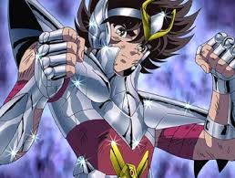

Seiya (Pegaso)
Seiya: El caballero de Pegaso, siempre luchando con valor.

Seiya: El caballero de Pegaso, siempre luchando con valor.
Shiryu: Perseverancia y honor en cada batalla.
Ikki: Renace más fuerte cada vez que cae.

Athena: Protectora de la paz y la justicia.